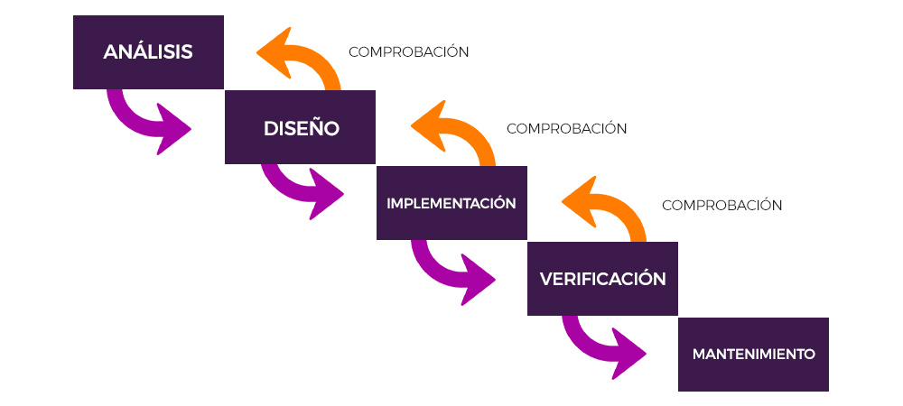
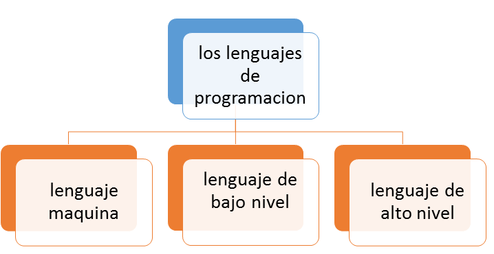
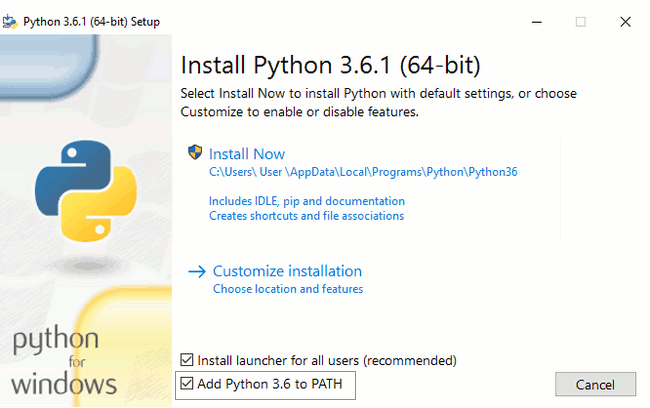
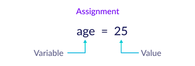
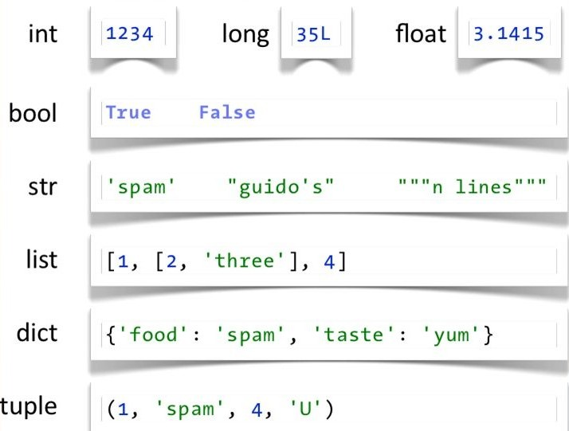
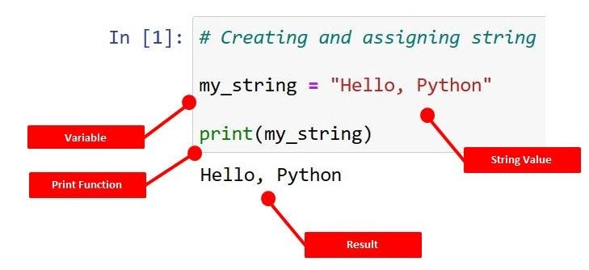
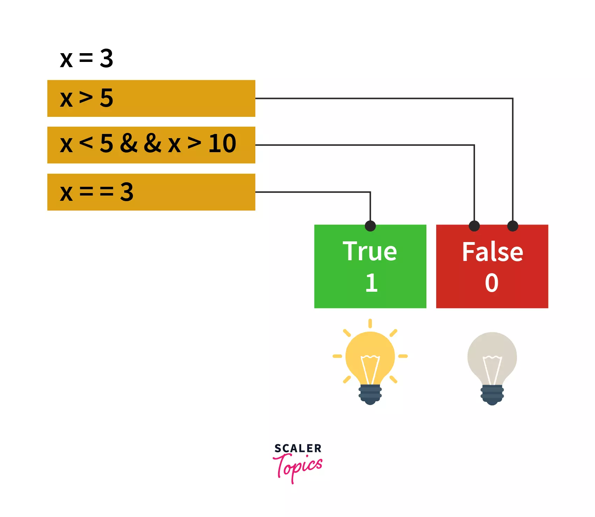

Introducción a la programación

La programación es el proceso de diseñar y crear instrucciones que indican a un ordenador cómo realizar tareas, desde acciones simples hasta sistemas complejos, con el objetivo de resolver problemas de forma lógica y estructurada.
- Transforma necesidades en software que ejecuta pasos precisos.
- Se apoya en algoritmos, lenguajes y buenas prácticas.
- Permite automatizar procesos, crear aplicaciones y analizar datos.
-
Ejemplos:
- Tarea simple: calcular el total de una compra con impuestos.
- Tarea compleja: coordinar resultados en un buscador web.
Concepto de algoritmo
Un algoritmo es una secuencia finita y ordenada de pasos para resolver un problema específico. Debe ser claro, preciso y producir un resultado a partir de datos de entrada.
- Finito: termina en un número limitado de pasos.
- Definido: cada paso es inequívoco.
- Ordenado: se ejecuta en un orden concreto.
-
En el siguiente ejemplo, se muestra un algoritmo para comprobar el estado de una lámpara.

Fases de desarrollo de un programa
El ciclo de desarrollo asegura que la solución cumpla requisitos, sea de calidad y se mantenga en el tiempo.

- Análisis: comprensión del problema y recogida de requisitos.
- Diseño: planificación con diagramas de flujo y/o pseudocódigo.
- Implementación: escritura del código en el lenguaje elegido.
- Verificación: depuración y validación de entradas y salidas.
- Mantenimiento: correcciones y nuevas funcionalidades.
-
Ejemplo:
- Para una app de notas: análisis (funcionalidades), diseño (pantallas/datos), implementación (código), pruebas (corrección de fallos), mantenimiento (nuevas vistas/filtros).
Lenguajes de programación: tipos y evolución

Los lenguajes han evolucionado desde bajo nivel (ensamblador) hasta alto nivel (p. ej., Python), equilibrando cercanía al hardware y productividad del desarrollador.
- Bajo nivel: lenguajes de máquina y ensamblador. Se ejecutan directamente en el hardware y "hablan" directamente al procesador.
- Alto nivel: lenguajes como Python, Java o C#. Abstracción de detalles de hardware, más legibles y fáciles de escribir.
Tipos de lenguajes
- Interpretados: se ejecutan sin compilación previa; favorecen rapidez de desarrollo (Python, JavaScript, Ruby, ...).
- Compilados: requieren traducción a código máquina antes de ejecutar; suelen ser más rápidos en ejecución (Java, C++, Go, ...).
-
Ejemplos:
- Python: alto nivel, interpretado, fácil de aprender y con gran ecosistema.
- C: medio nivel, compilado, potente para sistemas y aplicaciones de alto rendimiento.
- Ensamblador: bajo nivel, específico para cada arquitectura, usado para tareas críticas de rendimiento o control de hardware.
El entorno de desarrollo en Python
Un entorno de desarrollo integra herramientas para escribir, depurar y ejecutar programas. Elegir y configurar bien el entorno aumenta la productividad y la calidad del código.
- Editor/IDE, intérprete de Python, depurador, gestor de proyectos y extensiones.
- Permite probar código, aislar errores y documentar de forma eficiente.
-
Top editores/IDEs para Python:
- IDLE: integrado con Python, ideal para principiantes.
- Thonny: sencillo y orientado a la enseñanza.
- VSCode: potente, con soporte avanzado para Python. [Lo utilizaremos en clase]
- PyCharm: completo, con soporte para proyectos grandes.
- Muchas más..

Instalación de Python
Es muy sencillo instalar Python desde el sitio oficial. Pasos para su instalación:
- Descarga el instalador desde python.org/downloads.
- Ejecuta el instalador como administrador.
- Marca la opción "Add Python to PATH" durante la instalación.
- Completa la instalación y reinicia el sistema si es necesario.

- Verifica la versión con
python --versionopy --version(Windows). - Descarga la última versión estable de Python. La versión de la imagen puede estar desactualizada.
Estructura básica de un programa en Python
Un programa en Python sigue una lógica definida por su sintaxis y se ejecuta de forma secuencial, salvo que se indiquen estructuras de control (condicionales, bucles, etc.).
- Bloques claros y legibles.
- Uso de comentarios para documentar.
- Ejecución secuencial + control de flujo cuando se necesita.
Comentarios y sintaxis general
# Comentario de una sola línea con el corchete
"""Si necesito escribir en varias líneas,
uso comillas triples."""
Los comentarios explican el código y no se ejecutan. En Python se escriben con
#.
La sintaxis favorece instrucciones claras y legibles.
-
Ejemplos:
# Este es un comentarioprint("Hola Mundo") # Imprime un mensaje
Identación y normas de estilo
Python usa la identación para delimitar bloques (no emplea llaves). La guía PEP 8 recomienda 4 espacios por nivel para mejorar la legibilidad y evitar errores.
En el siguiente ejemplo se puede ver cómo se identan los bloques (ahora no es necesario entender
el código, solo observar la estructura y ver que el bloque del if está indentado
respecto a la condición,
y el bloque del else también está indentado pero al mismo nivel que el bloque del
if).
if x > 0:
print("positivo")
else:
print("negativo o cero")
Estructura lógica del código fuente
Las instrucciones se organizan en líneas y bloques. Por defecto se ejecutan en secuencia; los condicionales y bucles modifican ese flujo según la lógica del programa.
- Estructuras de control para tomar decisiones y repetir tareas.
- Claridad en bloques para facilitar mantenimiento y depuración.
Ejemplo:
for i in range(5): #línea 1
if i % 2 == 0: #línea 2
print(f"{i} es par") #línea 3
else: #línea 4
print(f"{i} es impar") #línea 5
Variables, constantes y operadores
En Python existen tres tipos de elementos fundamentales para almacenar y manipular datos: variables, constantes y operadores.
- Variables: espacios de memoria con un nombre que pueden contener datos que cambian durante la ejecución del programa. Las iremos viendo en los siguientes apartados de este tema.
edad = 25 # Declaración de una variable llamada edad y asignación del valor 25
nombre = "Ana" # Declaración de una variable llamada nombre y asignación del valor
PI = 3.14159).
PI = 3.14159 # Constante llamada PI
+), comparación (==) o lógica (and).
x = 5
y = 3
print(x + y) # Salida: 8
Declaración e inicialización de variables
En Python las variables se crean al asignarles un valor, sin declarar el tipo explícitamente. Este tipo de asignación se denomina tipado dinámico.
Ejemplo:

Constantes y literales
Una constante es un valor que no cambia durante la ejecución. Los literales son valores escritos directamente en el código (números, cadenas, booleanos). Se utilizan para asignar valores a variables o para representar datos fijos en el programa que no deben modificarse.
-
Ejemplos:
PI = 3.14159MENSAJE = "Bienvenido"ACTIVO = True
Tipos de datos simples
Python utiliza tipado dinámico y ofrece tipos básicos para representar números, texto y valores lógicos.
El tipado dinámico significa que el tipo de una variable se determina en tiempo de ejecución según el valor asignado. No es necesario declarar el tipo explícitamente, lo que facilita la escritura de código pero requiere cuidado para evitar errores de tipo.
Los tipos más utilizados son los siguientes:
- int: para números enteros, como 5, -3, 0.
- float: para números con decimales, como 3.14, -0.001.
- str: para cadenas de texto, como "Hola", 'Python'.
- bool: para valores lógicos, que pueden ser
TrueoFalse. - NoneType: representa la ausencia de valor, con el único valor posible
None. - Otros tipos: listas, tuplas, diccionarios, conjuntos, etc., que veremos en unidades posteriores.

Números enteros y decimales
Python trabaja con enteros (int) y flotantes (float) para representar cantidades con y sin decimales.
-
Ejemplo declaración de variables numéricas:
edad = 30 # int
precio = 19.99 # float
suma = edad + 5 # operación aritmética con enteros
print(suma) # Imprime 35
descuento = precio * 0.1 # operación aritmética con flotantes
print(descuento) # Imprime 1.999
Cadenas de texto (str)
Las cadenas (str) son secuencias de caracteres entre comillas simples o dobles.

Se pueden unir varias palabras con el operador +. A esta acción se le llama concatenación de cadenas.
-
Ejemplo:
nombre = "Ana" # Declaración de una cadena y asignación a la variable nombre el valor "Ana"
saludo = 'Hola, ' + nombre # Operación con una cadena literal y una variable, concatenando "Hola, " con el valor de nombre
print(saludo) # Imprime "Hola, Ana"
Booleanos
Los valores booleanos (bool) representan lógica True o
False y se usan en decisiones del programa.
Estos resultados se usan en estructuras de control (que iremos viendo en el tema de control de flujo) como if, while, etc.
En el siguiente ejemplo vemos cuál es el resultado de unas operación lógicas. No os preocupéis por entender el código, lo importante es observar que el resultado de estas operaciones es un valor booleano (True o False).

-
Ejemplo de operaciones lógicas que producen valores booleanos:
es_mayor = edad > 18 # Evaluación de una condición, el resultado es un valor booleano
print(es_mayor) # Imprime True si edad es mayor que 18, False en caso contrario
es_adulto_residente_ES = (edad >= 18) and (pais == "ES") # Evaluación de una condición compuesta, el resultado es un valor booleano
Operadores: aritméticos, lógicos y relacionales
Los operadores permiten construir expresiones y realizar cálculos y comparaciones.
| Tipo | Operadores | Ejemplo |
|---|---|---|
| Aritméticos | + (suma)- (resta)* (multiplicación)/ (división)% (módulo) |
sumar = precio + cantidadrestar = total - preciomultiplica = precio * cantidaddivide = total / cantidadresto = 10 % 2 |
| Relacionales | == (igualar)!= (distinto)> (mayor que)< (menor que)>= (mayor o igual que)<= (menor o igual que) |
mismo = a == b |
| Lógicos | and (y)or (o)not (no) |
es_adulto_y_residente_ES = edad >= 18 and pais == "ES"es_adulto_o_residente = edad >= 18 or pais == "ES"no_es_adulto = not (edad >= 18) # es una negación de lo que se indica. Utilizado en lógica más avanzada. |
-
Keep calm! :) La lógica de programación no es sencilla, aquí vemos las reglas básicas, pero hay muchas más que iremos viendo durante el curso.
Entrada y salida básica
La interacción con el usuario se realiza a través de entrada y salida por consola u otros medios. En esta unidad trabajamos con funciones para leer y mostrar información.
- Entrada: capturar datos con
input(). Se producen dos acciones, mostrar mensaje y obtención de información introducida por teclado. - Salida: visualizar resultados con
print(). Mostrará información en la consola.
nombre = input("¿Cómo te llamas? ") # Entrada de datos
print("Hola, " + nombre) # Salida de datos